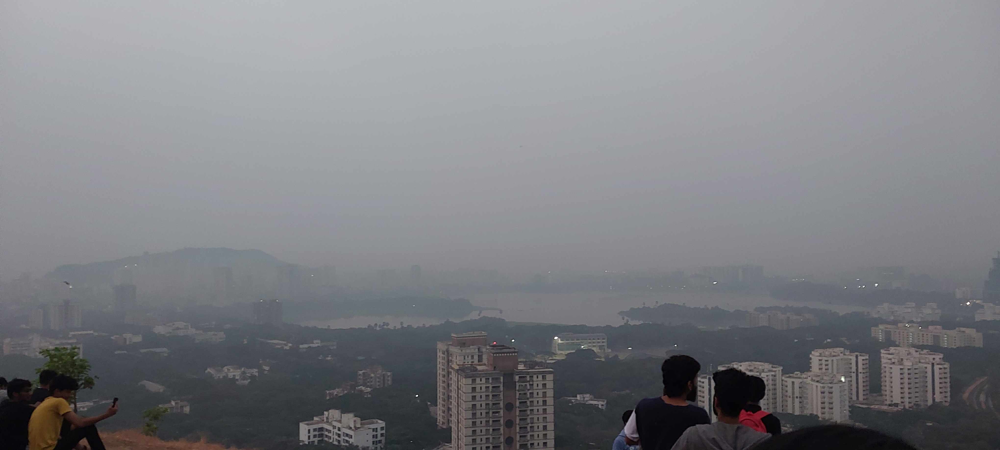
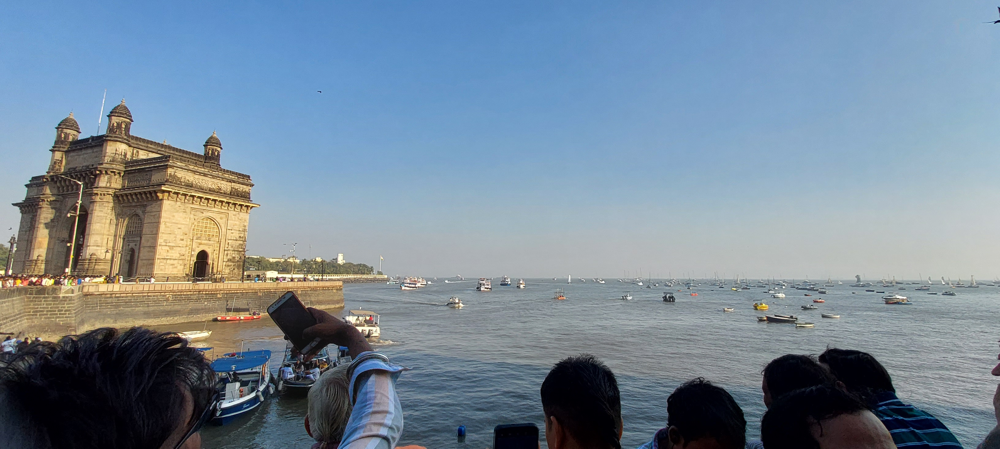

Hi! I’m Aaishwarya and this is a little scrapbook of my time at IIT Bombay.
From late-night wingie adventures to the magic of monsoon clouds ‚Äî here‚Äôs a peek into my memories, learnings, and some of my favorite moments üíô
freshman year
sophomore year
the freshman year
going to sameer hill
this trek was a hell lot
emotional ride. my wingies randomly asked me tag along at 1pm, just 4 hrs prior going.
i technically didn't slept that day! it was first
going for all of us and it was pitch dark. funny part is, that a drunkard lead our way to top.
i still don't understand how and why we trusted him. but it was all worth-doing, to see the sunrise
of that day. it was scary amazing experience with breathtaking view

mood indigo
1st time attended a concert. absolutely loved it! even though the ambience wasnt that great,
made a core memory
marine drive
first time going out with wingies. we went on new years' day!
it was sunday, so there was a megablock. taking a cab was too expensive,
so we just decided to go with local. for we needed to go mulund, so we got on a bus.
on reaching the station, we found a train going to csmt. till we go to platform, it started moving.
so we got on a moving train. this was my first time doing such train, it was terrifing but
yet thrilling too. overall had fun, even didn't explore much!
watching sunset on marine drive was the best part ❤️

the sophomore year
air lab
really had soo much fun in this lab , worked with people i didnt knew and got to know the
instruments. absolutely loved this lab.. i wish i could go back in time
clouds, sunsets
honestly this describes me.. i am always taking pictures of clouds and sunsets. i always feel more
grounded and connected to nature this way! üå•Ô∏è